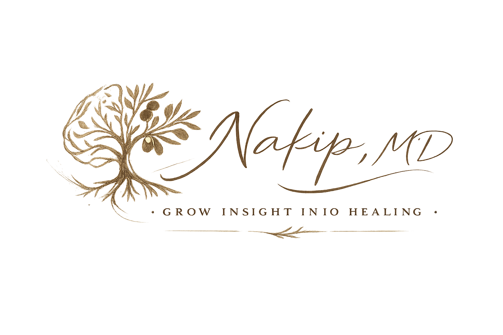

Sternberg's Triangle of Love
Concept Visualization by Dr. Nakip

Non-love
Move the sliders to visualize the dimensions of love.
Liking (Friendship)
Passion
Commitment
Passion
0
Passion:
The drive and excitement component. Associated with romance, physical attraction, and a strong feeling of enthusiasm.
Liking (Friendship)
0
Liking (Friendship):
The attachment and bonding component. Associated with connection, closeness, and understanding.
Commitment
0
Commitment:
The decision and continuation component. Associated with finality, the future, and an agreement or pledge to stay together.